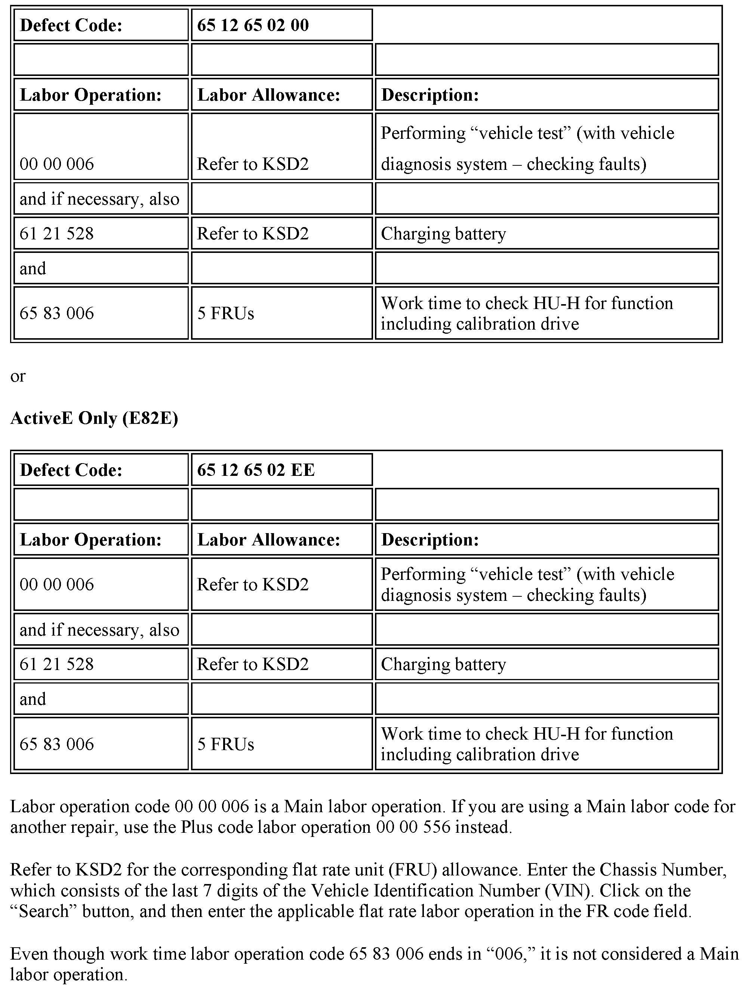
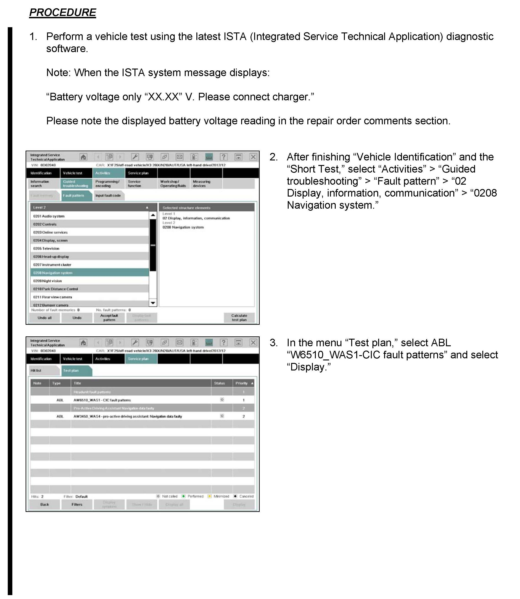
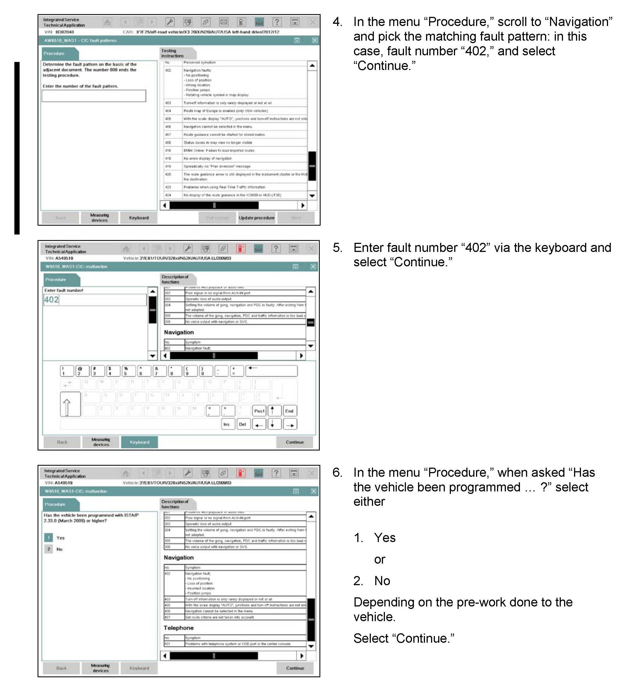
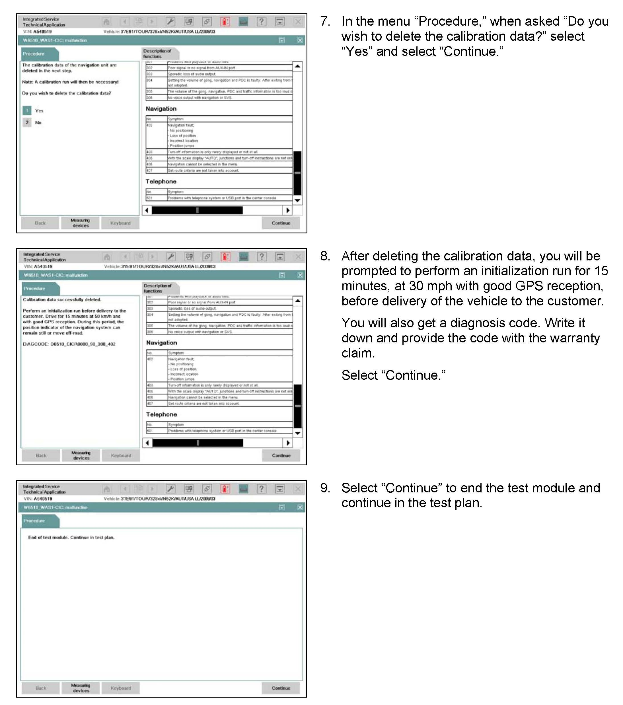

Navigation System - Vehicle Position Missing/Incorrect
SI B65 10 09Audio, Navigation, Monitors, Alarms, SRS
March 2013
Technical Service
This Service Information bulletin supersedes SI B65 10 09 dated September 2009.
[NEW] designates changes to this revision
SUBJECT
MODEL
[NEW]
E60
E61
E63
E64
F70
E71
E72
E82
E82E
E84
E88
E89
E90
E91
E92
E93
F01
F02
F04
F06
F07
F10
F12
F13
F25
F30
Vehicles with option 609 (Navigation System Professional, CIC)
SITUATION
The vehicle position is missing or incorrect on the navigation map.
[NEW] CAUSE
The navigation system integrated in the Car Information Computer (CIC) is not calibrated correctly.
[NEW] CORRECTION
Recalibrate the CIC navigation system
[NEW] PROCEDURE
Do not replace parts!
Refer to the attachment.
NOTE:
Before delivery of the vehicle to the customer, perform a calibration drive for 15 minutes at a speed of 30 mph.
Note:
When the ISTA system message displays: Battery voltage only "XX.XX" V. Please connect charger. Please note the displayed battery voltage reading in the repair order comments section.

[NEW] WARRANTY INFORMATION
Covered under the terms of the BMW New Vehicle/SAV Limited Warranty.



ATTACHMENTS
View PDF attachment B651009_Attachment.